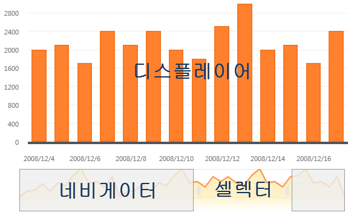
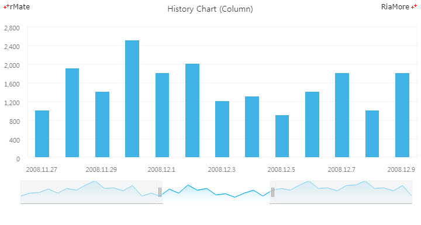

히스토리 차트
히스토리 차트는 기본적으로 스크롤 차트와 같은 개념의 차트입니다.
두 차트의 차이점은 히스토리 차트에서는 조회를 원하는 데이터의 위치를 스크롤바를 통해서 지정하는 것이 아니라, 네비게이터와 셀렉터를 통해서 지정한다는 것입니다.
이 때 지정된 데이터들은 디스플레이어에 표시됩니다. 다음 그림은 히스토리 차트를 표현한 것입니다.

히스토리 차트의 레이아웃은 다음과 같은 구조로 작성됩니다.
<HistoryChart>
<displayerChart>
<Displayer id="chart1" showDataTips="true" fontFamily="Malgun Gothic">
...
</Displayer>
</displayerChart>
<navigator>
<Navigator id="navi" width="100%" height="80" gutterLeft="0" gutterRight="0" paddingLeft="30" paddingRight="10">
...
</Navigator>
</navigator>
<selector>
<HistoryRangeSelector width="100%" startingRange="center" visibleItemSize="30"/>
</selector>
</HistoryChart>
<Displayer> 노드와 <Navigator> 노드에 설정이 가능한 데이터 시리즈는 카테시안 차트의 데이터 시리즈입니다.
다음은 <HistoryChart> 노드의 주요 속성에 대한 설명입니다.
<HistoryChart> 노드의 displayerChart 속성과 navigator 속성에 지정 가능한 유효값은 각각 <Displayer> 노드와 <Navigator> 노드입니다.
<Displayer> 노드는 카테시안 차트 노드의 공통 속성을 모두 가지며 <Navigator> 노드는 <Area2DChart> 노드의 모든 속성을 가집니다.
다음은 디스플레이어에 컬럼 시리즈를 네비게이터에 영역 시리즈를 표현하는 히스토리 차트를 생성하는 코드와 이를 적용해서 출력한 차트의 예제입니다.
<HistoryChart>
<displayerChart>
<Displayer id="chart1" showDataTips="true" fontFamily="Malgun Gothic">
...
<Column2DSeries id="columnSeries" yField="Data1" displayName="Data1">
...
</Displayer>
</displayerChart>
<navigator>
<Navigator id="navi" width="100%" height="80" gutterLeft="0" gutterRight="0" paddingLeft="30" paddingRight="10">
...
<Area2DSeries name="A" yField="Data1">
...
</Navigator>
</navigator>
<selector>
<HistoryRangeSelector width="100%" startingRange="center" visibleItemSize="30"/>
</selector>
</HistoryChart>

See the CodePen 알메이트 차트 - 히스토리 컬럼 차트
위 예제에서 <selector> 속성에 정의된 <HistoryRangeSelector> 노드의 주요 속성에 대한 설명은 아래와 같습니다.
| 속성명 |
유효값 (*: 기본값) |
설명 |
| liveDragging |
true(*), false
|
셀렉터가 변경되면 변경된 데이터 영역을 디스플레이어 즉시 표시할지 여부를 설정합니다.
|
| startingRange |
left, center(*), right
|
차트가 처음 생성되었을 때 셀렉터에 선택될(디스플레이어에 표시될) 데이터 영역을 지정합니다.
|
| visibleItemSize |
숫자
기본값: 10
|
디스플레이어 차트에 표시할 데이터의 개수를 지정합니다.
|
셀렉터의 스타일은 rMateChartH5.css 파일에 설정되어 있고, 다음 디렉토리에서 찾으실 수 있습니다.
Installation directory/rMateChartH5/Assets/Css/ |
CSS 스타일의 내용은 다음과 같습니다.
.rMateH5__ChartRangeSelector_LeftThumb, .rMateH5__ChartRangeSelector_RightThumb{
width:10px;
height:100%;
cursor:col-resize;
border-bottom:solid 1px #b5b5b7;
background:url("./selector.png") no-repeat 50% 50%;
background-color:rgb(236, 240, 241);
filter:progid:DXImageTransform.Microsoft.Alpha(opacity=60);
background-color:rgba(236, 240, 241, 0.6);
}
.rMateH5__ChartRangeSelector_Left, .rMateH5__ChartRangeSelector_Right{
border:solid 1px #eee;
border-bottom:solid 1px #b5b5b7;
background-color:rgb(236, 240, 241);
filter:progid:DXImageTransform.Microsoft.Alpha(opacity=60);
background-color:rgba(236, 240, 241, 0.6);
}
.rMateH5__ChartRangeSelector_Center{
cursor:pointer;
background-color:rgb(255, 255, 255);
filter:progid:DXImageTransform.Microsoft.Alpha(opacity=0);
background-color:rgba(255, 255, 255, 0);
}